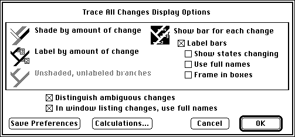
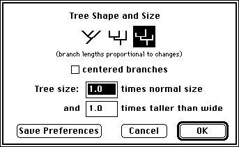

For MacClade version 3.06
Wayne P. Maddison and David R. Maddison
14 August 1996
This Supplement describes aspects of the program not described in the book. It is organized by chapters, with page numbers referring to those in the book.
This is the supplement for the second printing of the MacClade book (in the first printing there were more typographical errors). First printings of the book will have, as the bottom line on the copyright page, a string of numbers ending in "1", that is, "5 4 3 2 1". Second printings will have the string "5 4 3 2". If you have a first printing, please see the Supplement to the First Printing of the MacClade Book.
For technical support (including bug reports) please use the following electronic mail address:
clade@arizona.edu
As we do not have staff available to help us with technical support, we would appreciate if you contact us by e-mail, not telephone.
Molecular sequence data can now be exported to the format used by MEGA version 1 (Kumar et al., 1993), using the MEGA 1 item in the Export File submenu in the File menu. If some terminal taxa are polymorphic or have partial uncertainty at some sites, then MEGA 1 will not be able to read the files without modification. If MacClade detects polymorphisms or partial uncertainties, it will provide three options: to cancel the export, to convert polymorphisms and uncertainties to missing data, or to write the polymorphisms and uncertainties using IUPAC ambiguity codes. The latter option will produce files that will not be compatible with MEGA version 1, but which will be compatible with a later version (Kumar, pers. comm.).
Compress Characters (in the Utilities menu). Choosing Compress Characters will cause MacClade to search for characters with identical character states; MacClade will then compress these identical characters into one. Excluded characters will be re-included and compressed. The type of the compressed character will be the type of the first encountered character of that sort; the weight will be the sum of the weights of the compressed characters. Thus, if there were three characters (each given weight 1), all of which had A for taxa 1 and 2 but G for the remaining taxa, then MacClade would compress these three characters into one, and give that single compressed character a weight of 3.
Filter Taxa (p. 172). If you ask to filter taxa (and "consider taxa redundant even if states are not identical..." is not chosen), then MacClade will report the number of "extra" taxa. For example, if a matrix contains 4 identical taxa MacClade will report "Number of redundant taxa: 3". If you do choose "consider taxa redundant even if states are not identical...", then MacClade will report the number of redundant pairs, in this case 6.
Pasting Rows and Columns (p. 184). If you attempt to paste a clipboard of entire rows or columns containing more rows or columns than the current selection, MacClade will automatically insert extra rows or columns to accommodate the pasted elements.
You can now ask MacClade to speak your data matrix. This command, which was present in test copies of MacClade in 1987-1989, has been resurrected now that Apple has released a new speech synthesizer. To ask MacClade to speak your matrix, you need to be running System 7.1 or later, and to have the system extensions Macintalk and the Speech Manager installed in the Extensions Folder in your System Folder. If you do not have copies, you can currently (May 1995) download the Text to Speech software package from Apple Computer's World Wide Web side at the URL "http://www.info.apple.com". It may be possible to purchase this software from Apple Computer. Once you have installed these, you will need to restart your machine to have them take effect.
Speak Matrix in the Utilities menu will then cause MacClade to read your matrix. If you have a single cell selected in the matrix, MacClade will begin speaking from that point; otherwise, it will begin at the start of the matrix. Speaking will continue until you hold the mouse button down for a while, or until you type command-period. Currently, you have very little control over how MacClade speaks the matrix. For example, you cannot choose to use different voices; MacClade uses the default voice. You can only control the timing of pauses in reading the matrix, using the Speech Options dialog box in the Utilities menu. If you want MacClade to pause after every cell, enter "1" in the "every _ items" box.
The design of the Trace Labeling dialog box (pp. 256-258) has changed; it now looks like this:

There is one minor new feature available: if you display the characters changing along a branch with bars (tick marks), you can choose to have the bars unlabelled. Also, if you choose to label branches by the amount of change, and the changes on a particular branch are not calculated (for example, because the branch is part of a polytomy), then the branch will be labeled "NC" in version 3.02 rather than "not calc." as in versions 3.0 and 3.01. This was done to prevent overlapping labels on the screen.
You can now request that MacClade draw the length of each branch proportional to the number of changes reconstructed along the branch. To do this, first make sure Trace All Changes is on, then choose Tree Shape & Size from the Display menu. This dialog now includes a third shape icon, on the right hand side:

Select it, and press OK; MacClade will then draw the branches with varied branch lengths. If minimum-average-maximum changes are calculated, then MacClade will draw the branch lengths proportional to the maximum changes. (Note that to the length of each branch is added a small amount [4 pixels]. This enables even zero-length branches to be picked up and moved around.) When proportional branch lengths are shown in the tree window, MacClade will automatically adjust the vertical scale of the branches so that bars and labels on branches will be visible. However, this is not done if you have asked MacClade to weight changes by the cost of changes or character weights in the All Changes Options dialog box.
Trace All States (p. 261). A character with all missing data in the observed taxa in the current tree will be reconstructed as having any possible state at each node in the tree for molecular data (e.g., the MPR set at each node will be "A or C or G or T"). Thus these MPR sets will contribute to states and frequencies listed by Trace All States.
If you use Chart To Weight Set (pp. 283-284), then the characters in any interval with 0 observed steps or changes in a chart showing steps or changes will be assigned a weight equal to the maximum value of the scale chosen. Thus, 0 steps using the W = 1/S weight function and a weight scale from 1 to 10 will be assigned a weight of 10, not a weight of [[infinity]]. Characters with the next-lowest number of steps or changes will be assigned the same, maximal value.
In the Chart To Weight Set (pp. 283-284) and Chart To Type Set (p. 295), MacClade will beep if you enter a value for the upper end of the weight scale that is too high (see p. 198 for weights, p. 206 for types).
If you ask to have the States chart (p. 296) displayed using percentages, then in the bar chart and table the values are shown with respect to the pool of observed states (not including missing data and gaps). Thus, if frequencies in the data matrix are 20% for each of A, C, G, T, and gaps, then the charts would show frequencies of A, C, G, and T of 25%. The textual summary calculates percentages in two ways: (1) as in the bar charts and tables; (2) with respect to the total number of data matrix entries (including missing data and gaps). The latter method would calculate percentages of A, C, G, and T as 20% for the example given.
In the Compare 2 Trees and Compare 2 Tree Files charts (pp. 296-297), the vertical axis options dialog box gives you the option to have the bars indicate either which characters are shorter in a tree or tree file (as illustrated on pp. 296-297 of book), or which are longer.
Continuous values can be from 0.0 to 9999.9. Larger values and negative values are not allowed.
The Edit Continuous dialog box (p. 303) allows you to indicate a range for a single terminal taxon by using "to" or "-", as in "0.13 to 0.25" or "2.31 - 3.44". You can also indicate small or large numbers using exponential notation, as in "3.5e3" (for 3500.0) or "2.8e-6" (for 0.0000028). However, in the same entry you cannot use both negative exponents and "-" to indicate a range. Thus "1.4e-6 - 2.8e-6" is not allowed and will not be interpreted correctly.
Evolve Characters (pp. 320-322). The number of segments that can be assigned to each branch for the Evolve Characters feature cannot be more than 1000. Also, the WARNING on p. 321 of the book is no longer applicable, as the number of segments assigned to each branch is now saved for the current tree. Thus, the number of segments on each branch should be saved when you to go to the data editor and back, when you save and reopen the file, and so on. However, the numbers of segments are saved only for the tree in the tree window (other trees stored in the file are not stored with their numbers of segments). However, in special cases in which a tree change is Undone, the evolve segments may revert to all 1. Thus, you should still check to see that the segments are as you want them just before using them. Also, there is now a "save report" check box that allows you to choose whether or not to save a report of the simulation (versions 3.0-3.02 always saved a report).
If Translate to Protein (p. 327) is used, MacClade will automatically name the resulting protein sites. Sites translated from the first protein-coding block in the file will be named 1.1, 1.2, 1.3, and so on. If in the original nucleotide sequence there was more than one protein-coding region (separated by non-coding regions), then sites in the second translated region will be named 2.2, 2.3, 2.4, and so on.
The Genetic Code dialog box has been altered to allow for several new pre-defined genetic codes. In versions 3.0-3.04, you selected the two predefined genetic codes (universal and mitochondrial) using buttons in the dialog box; in version 3.05-3.06, these have been replaced by a pop-up menu, with eight codes. These include universal, universal extended (equivalent to the universal of versions 3.0 to 3.04), Drosophila mitochondrial DNA, Drosophila mitochondrial DNA extended, mammalian mitochondrial DNA, mammalian mitochondrial DNA extended (equivalent to the mtDNA of versions 3.0 to 3.04), and yeast mitochondrial DNA (Osawa et al., 1992). The extended codes are those in which the disjunct amino acids are split into distinct states (see p. 332 of the book).
You cannot ask MacClade to create a protein-parsimony user-defined type (p. 333) if the tree window is on the screen. This can be done only if the data editor is on the screen.
See also the note regarding Trace All States under Chapter 13.
1. The controls are separate for the taxon name fonts, whether patterns, colors, or grays are used in tracing branches, and all options in the Trace Labeling dialog box for Trace All Changes except whether ambiguous changes are distinguished. Changing one of these options in the tree window will not affect values in the Print Tree dialog box.
2. Controls to change other options in the Trace Labeling dialog boxes are present in both windows, and changing values in one window affects the values in the other.
3. Controls for showing node numbers, showing evolve segments, adjusting the content of the taxon labels, and the patterns or colors used in tracing are available only in the tree window, not in the Print Tree dialog box.
4. Some options are relevant to only one of the windows, and only have controls in that window (e.g., branch lengths).
In addition, the rules regarding punctuation have changed. By default, MacClade 3.06 uses the old punctuation rules on reading a file, the new ones on writing a file (these new files are perfectly legible to MacClade 3.0-3.04). (The new rules dictate that +, `, <, and > are punctuation, which will break a token; the old rules did not specify these as punctuation.) If you want to force MacClade to use the new rules when reading a file, you can do this by going to the Save Preferences dialog box in the File menu, uncheck "old punctuation", and press the "Save Preferences" button. The new rules are not currently relevant for any program.
Kumar, S., K. Tamura, and M. Nei. 1993. MEGA: Molecular Evolutionary Genetics Analysis, version 1.0. The Pennsylvania State University, University Park, PA 16802.
Osawa, S., T.H. Jukes, K. Watanabe, and A. Muto. 1992. Recent evidence for the evolution of the genetic code. Microbiol. Rev. 56:229-264